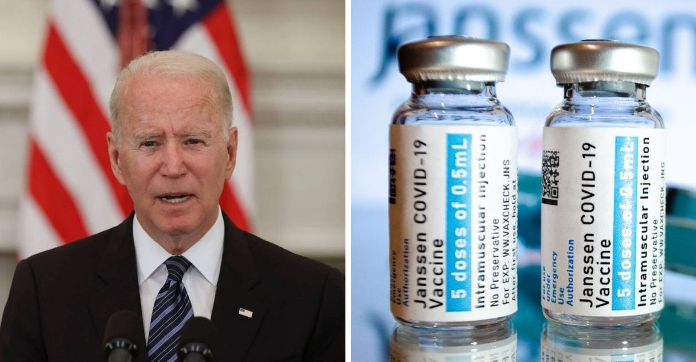
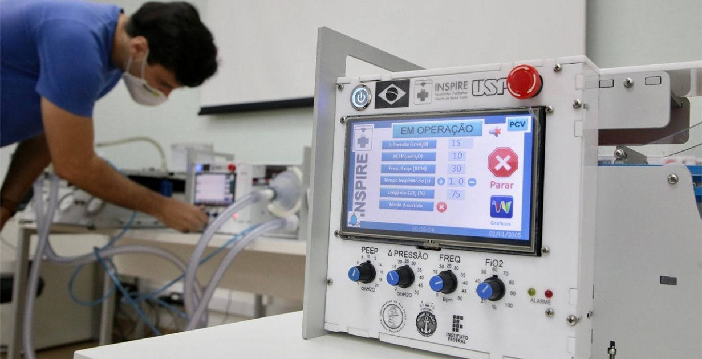
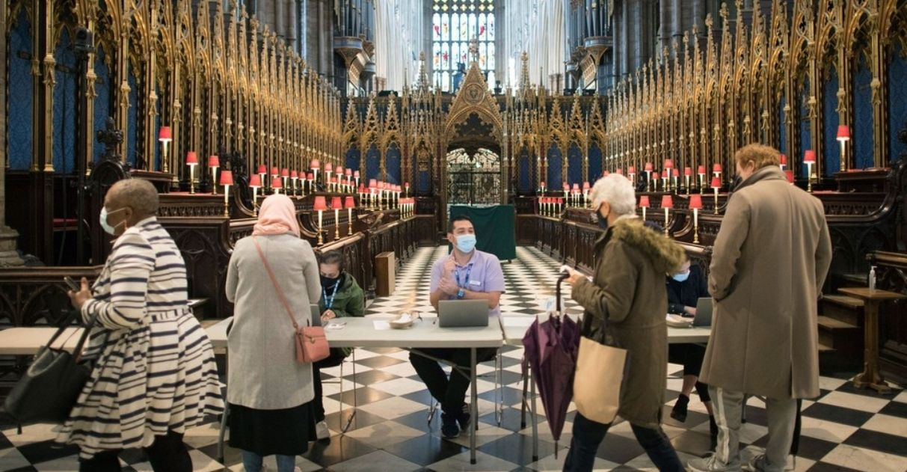

Good news Covid-19
News

«Viva a vacina» – UTIs vazias
Desde o dia 25 de junho, o Hospital Geral Doutor João Machado, em Natal (RN), conseguiu esvaziar uma ala inteira de UTIs dedicadas à pacientes diagnosticados com a Covid-19.

EUA doam 3 milhões de vacinas contra a Covid-19 ao Brasil
O governo dos EUA anunciou que irá enviar 3 milhões de doses da vacina da Jannsen contra a Covid-19 diretamente ao Brasil.

Respiradores distribuídos pela USP já salvaram mais de 100 vidas
A Escola Politécnica da Universidade de São Paulo (USP), por meio do Projeto Inspire, anunciou a distribuição de mais de 150 respiradores para unidades de saúde espalhadas por todo o Brasil.

Reino Unido não tem mortes por Covid-19 pela 1ª vez desde julho do ano passado
Boas notícias vindo do Reino Unido! Pela primeira vez desde julho do ano passado, a terra da rainha Elizabeth II não registrou qualquer nova morte por Covid-19 nesta terça-feira (1).